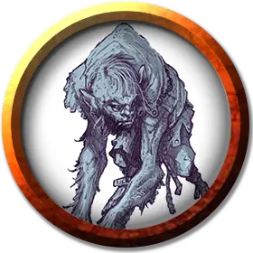

Марзена Белвью
Marzena Belview
Средний Гуманоид (Полукровка), любое мировоззрение, именной НИП

Класс Доспеха 11 (природный доспех)
Хиты 26 (4к8 + 8)
Скорость 20 футов
| мод | спас | ||
|---|---|---|---|
| СИЛ | 12 | +1 | +1 |
| ЛОВ | 9 | −1 | −1 |
| ТЕЛ | 15 | +2 | +2 |
| мод | спас | ||
|---|---|---|---|
| ИНТ | 9 | −1 | −1 |
| МДР | 10 | +0 | +0 |
| ХАР | 6 | −2 | −2 |
Навыки Восприятие +2, Обман +2, Скрытность +3
Чувства пассивное Восприятие 12
Языки Общий
Опасность 1/4 (50 опыта)
Бонус мастерства +2
Особенности
Полет. У Марзены есть кожаные крылья, дающие ему скорость полёта 40 футов.
Подражание. . Марзена подражают любым звукам и голосам, которые слышали раньше. Существо, услышавшее эти звуки, может понять, что это имитация, если преуспеет в проверке Мудрости (Проницательность) Сл 12.
Действия
Мультиатака. Марзена совершает две атаки: одну укусом и одну когтями или кинжалом.
Укус. Рукопашная атака оружием: +3 к попаданию, досягаемость 5 футов, одна цель. Попадание: колющий урон 3 (1к4+1).
Когти. Рукопашная атака оружием: +3 к попаданию, досягаемость 5 футов, одна цель, Попадание: рубящий урон 3 (1к4+1).
Кинжал. Рукопашная или дальнобойная атака оружием: +3 к попаданию, досягаемость 5 футов или дистанция 20/60 футов, одна цель. Попадание: колющий урон 3 (1к4+1).
Описание
Марзена ростом в 4 фута 5 дюймов, она всегда сгорблена. Длинные сухие чёрные волосы скрывают большую часть ее лица, но паучьи жвалы и зубы, которые заменяют ей рот, можно увидеть без труда. Вместо рук у неё крылья летучей мыши, а вместо правой ступни – копыто. Она никого не подпускает так близко, чтобы можно было снять с неё цепь. Но если оковы открыть с помощью магии или каким-либо образом сломать, Марзена навсегда улетит.
Её безумие выражается следующей фразой: «Я уверена, что за мной охотятся могущественные враги, а их агенты повсюду. Я знаю, они все время следят за мной».
Полукровки – гуманоиды, предки которых или они сами претерпели ужасные магические преобразования, в результате чего они сохранили лишь часть своей первоначальной сущности. Их гуманоидные тела включают в себя особенности различных зверей. Например у одного полукровки может быть тело дварфа, голова, сочетающая в себя черты ящерицы и кошки, рука, которая заканчивается клешнёй краба, и нога, заканчивающуюся раздвоенным копытом. У другого могут быть кожа и рога коровы, глаза паука, ноги лягушки и чешуйчатый хвост ящерицы. В результате безумных комбинаций гуманоида с животными, у полукровок довольно медленная и неуклюжая походка.
Имитирование. Голосовые связки и рты полукровок деформированы. В результате чего они говорят на искаженном Общем, смешанным с различными животными криками. Они могут превосходно имитировать звуки животных и гуманоидов, услышанных ими ранее. Полукровки недостаточно умны, чтобы использовать эти звуки как скрытую форму общения, но они могут издавать эти звуки, чтобы заманить врагов в ловушку или тем или иным образом отвлечь их.
Изгои общества. Полукровки редко приветствуется в других гуманоидных обществах, там они подвергаются травле, обращаются в рабство или их попросту избегают. Как правило они живут в развалинах на окраинах цивилизации, пустых домах, или в других местах, в которых когда-то жили или строили представители других гуманоидных рас. Вне своего дома они робки и пугливы, но переступи порог их логова, и они яростно будут его защищать.
Эксперты по камуфляжу. Полукровки часто скрывают свои уродства под плащами и капюшонами. Таким образом, их можно принять за толстых людей, или худых дварфов. Они любят гримировать себя, прикрепляя к плащам разные листочки и ветки, красят свою кожу в коричневый цвет, а также плетут сети из травы, под которой удобно прятаться. Они используют такой камуфляж, когда охотятся в дикой природе или охраняют границы своих убежищ. Пока их не видно, замаскированные полукровки имеют преимущество на проверки Скрытности.
Ужасное потомство. Полукровке можно восстановить его первоначальный вид с помощью заклинания высшее восстановление [greater restoration], но сделать тоже самое с их потомством уже не получится. Помочь восстановиться до первоначальной формы можно лишь тем полукровкам, что были изменены с помощью магии. Полукровка, рожденный настоящим полукровкой, не подвергался заклинаниям или эффектам, которые могут быть отменены. Полукровка может завести ребенка с другим гуманоидом, но почти все дети, рожденные от таких родителей, являются полукровками. (Примерно один ребенок из ста рождается похожим на своего «неполукровного» родителя).